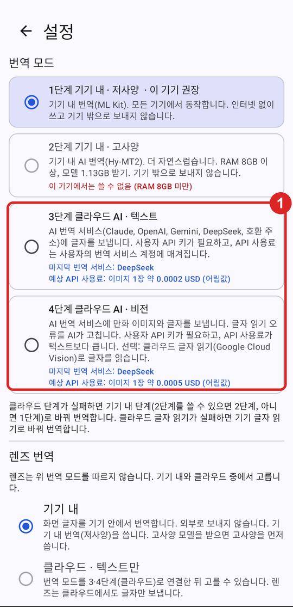
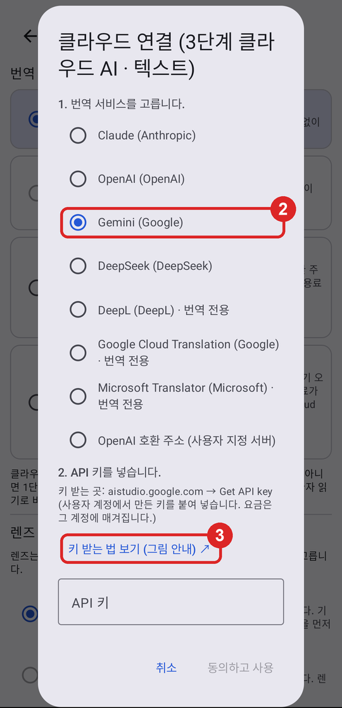
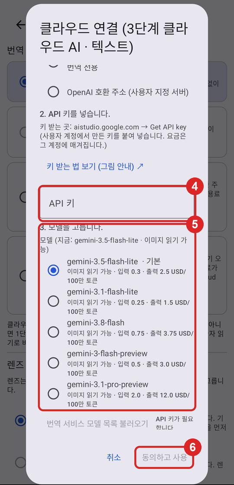

한국어 · English
최종 수정: 2026-11-01. 업체별 순서는 각 업체의 공식 문서(2026-11-01 확인)를 따릅니다. 업체 화면과 요금은 바뀔 수 있습니다. 요금은 각 업체 페이지에서 확인하세요.
툰렌즈의 3·4단계(클라우드 AI) 번역은 사용자 본인의 API 키로 업체에 직접 요청합니다. 개발자는 키와 번역 내용을 받지 않습니다. 요금은 키를 만든 계정에 매겨집니다.
| 업체 | 툰렌즈 단계 | 시작 조건 | 메모 |
|---|---|---|---|
| Google Gemini | 3·4단계 | Google 계정 | 처음 써 보기에 가장 쉽습니다 |
| Anthropic Claude | 3·4단계 | 크레딧 결제 | 문장이 자연스럽습니다 |
| OpenAI | 3·4단계 | 크레딧 결제 | |
| DeepSeek | 3단계(텍스트) | 잔액 충전 | 요금이 낮습니다 |
| DeepL | 3단계(번역 전용) | DeepL API 계정 (Free 요금제 있음) | DeepL 번역기 계정과 따로 만듭니다 |
| Google Cloud | 3단계(번역 전용), 4단계 클라우드 OCR | 결제 계정 연결 | Cloud Translation API, Cloud Vision API |
| Microsoft Translator | 3단계(번역 전용) | Azure 계정 (무료 등급 있음) | 지역은 Global을 권합니다 |



키는 기기 안에 암호화해 저장합니다. 저장한 뒤에는 칸에 다시 보이지 않습니다. 키를 바꾸려면 같은 창에서 새 키를 붙여 넣습니다.
키 받는 곳: aistudio.google.com/apikey · 공식 안내: Gemini API 키
키는 Google Cloud 프로젝트에 속합니다. 무료 사용량과 요금은 Google의 Gemini API 요금 페이지를 보세요. 무료 사용량으로 보낸 내용은 Google이 서비스 개선에 쓸 수 있습니다.
키 받는 곳: platform.claude.com → Settings → API keys · 공식 안내: Get your Claude API key
Billing 화면에서 지출 한도를 볼 수 있습니다. 처음에는 작은 금액만 넣기를 권합니다.
키 받는 곳: platform.openai.com → API keys · 공식 안내: Developer quickstart
키 받는 곳: platform.deepseek.com → API keys · 공식 안내: DeepSeek API Docs
DeepSeek 서버는 중국에 있습니다. 툰렌즈 "클라우드 연결" 창의 안내를 읽고 고르세요.
키 받는 곳: deepl.com/your-account/keys · 공식 안내: DeepL API 시작하기
Free 키는 끝이 ":fx"입니다. 툰렌즈는 이것을 보고 Free 주소(api-free.deepl.com)로 보냅니다.
키 받는 곳: console.cloud.google.com → API 및 서비스 → 사용자 인증 정보 · 공식 안내: API 키 관리
Gemini 키(AI Studio)와 Google Cloud 키는 다를 수 있습니다. 번역 전용 키는 "클라우드 연결" 창에서 "Google Cloud Translation"을 고르고 넣습니다. 클라우드 OCR 키는 설정 → "고급: 번역 서비스·API 키" → "Google Cloud Vision" 칸에 넣습니다.
키 받는 곳: portal.azure.com → Translator 리소스 → 키 및 엔드포인트 · 공식 안내: Translator 리소스 만들기
지역을 Global이 아닌 곳(예: koreacentral)으로 만들었으면, 툰렌즈 설정 → "고급: 번역 서비스·API 키"의 Microsoft 칸에 그 지역을 넣습니다.
| 보이는 것 | 뜻 | 할 일 |
|---|---|---|
| 401, 403, invalid key | 키가 틀렸거나 지워졌습니다 | 키를 다시 복사해 붙여 넣습니다. 앞뒤 빈칸이 없는지 봅니다 |
| 402, insufficient balance, credit | 잔액·크레딧이 없습니다 | 업체 Billing 화면에서 충전합니다 |
| 429, rate limit, quota | 사용량 한도를 넘었습니다 | 잠시 뒤 다시 합니다. 한도를 올리거나 다른 업체를 씁니다 |
| "기기 내 번역으로 바꿈" | 클라우드 요청이 실패했습니다 | 위 항목을 확인합니다. 그래도 안 되면 설정 → 문제 알리기로 알려 주세요 |